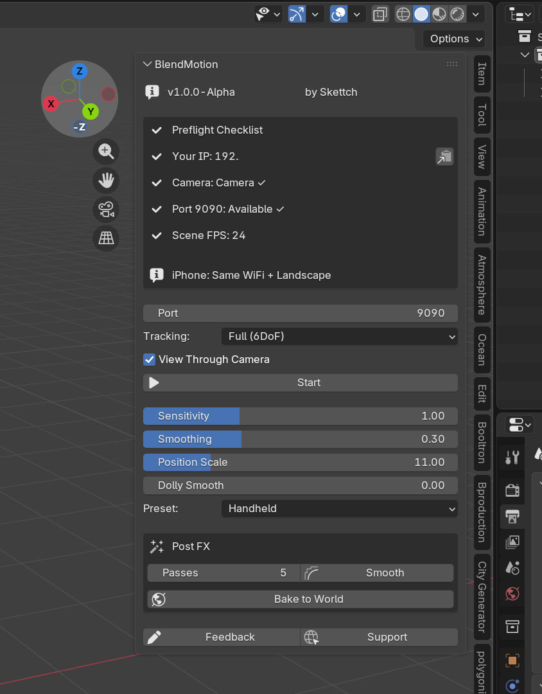
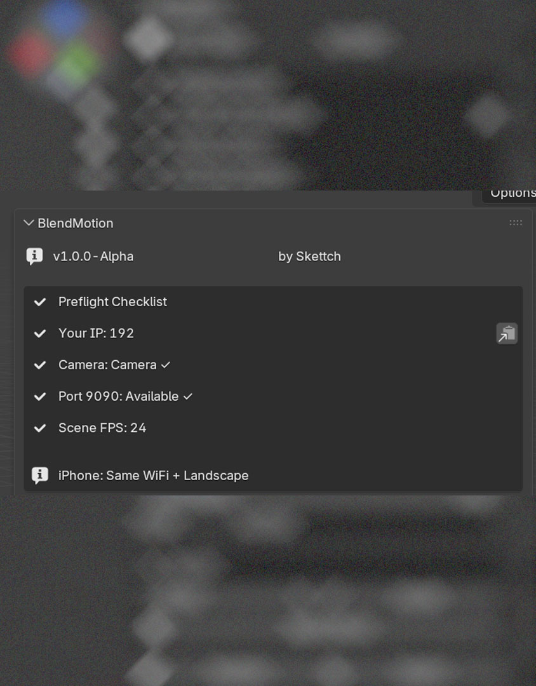
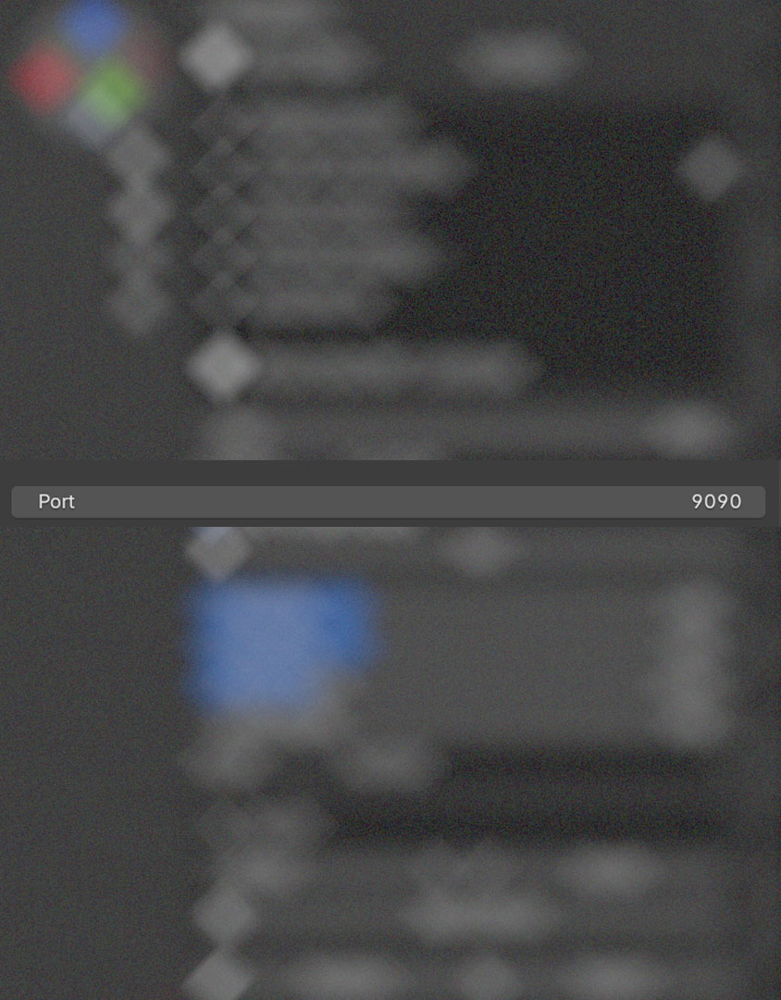
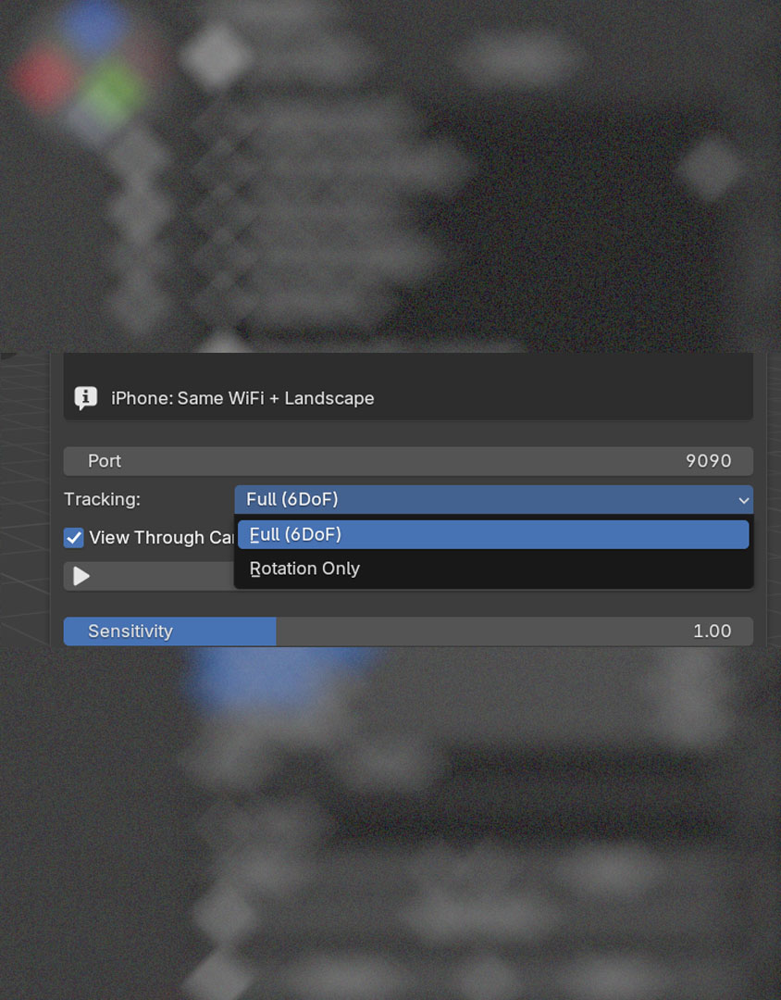
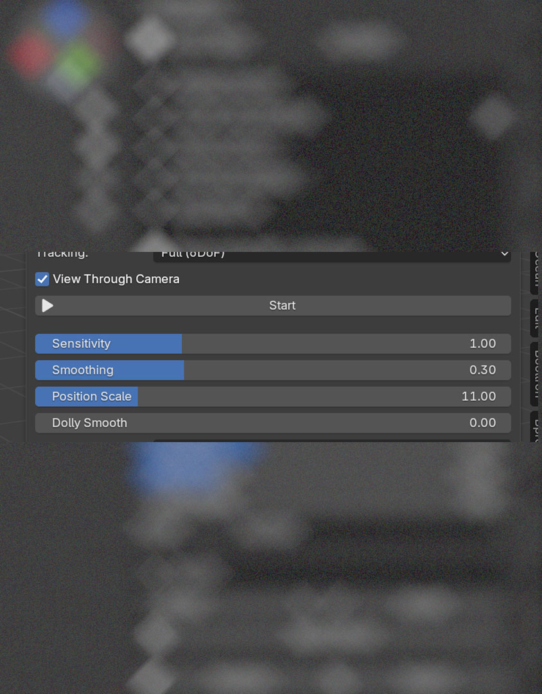
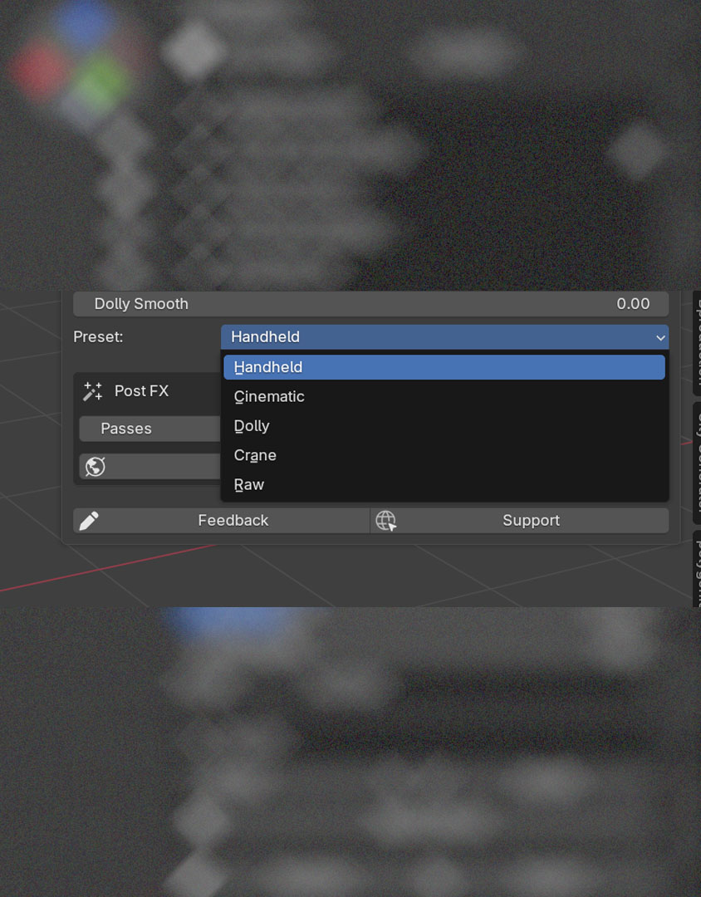
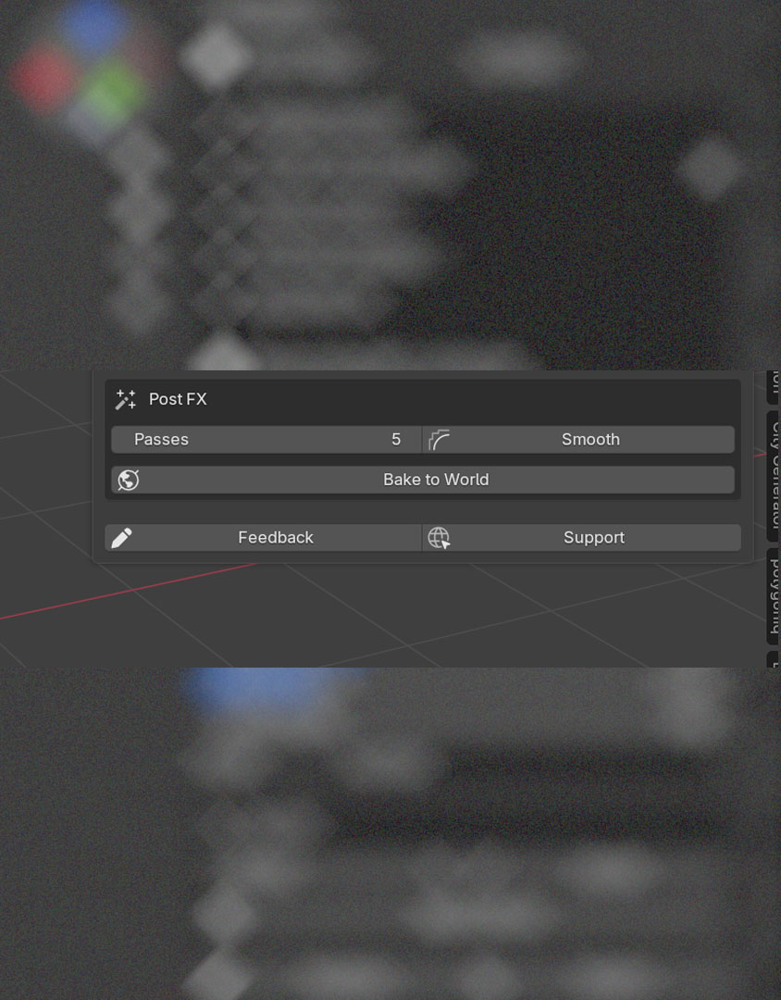
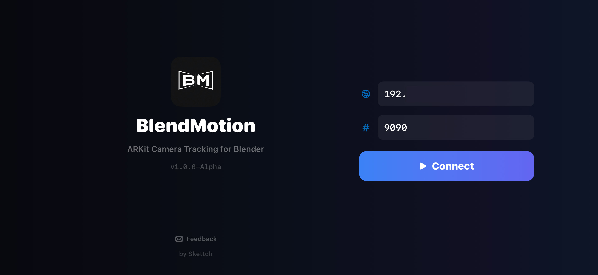
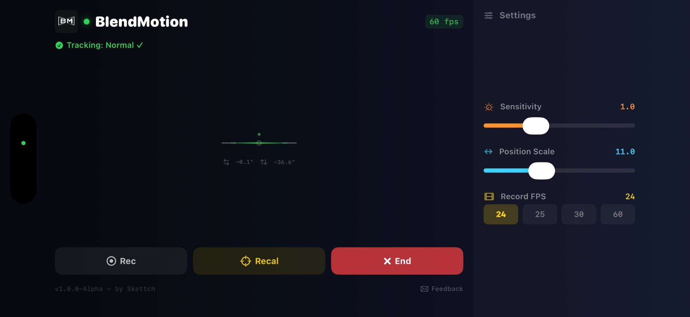

Panel Overview

The BlendMotion Panel
The BlendMotion panel lives in Blender's 3D Viewport Sidebar. Open it by pressing N in the viewport, then click the BlendMotion tab.
The panel is organized from top to bottom in the order you'll use it:
Preflight Checklist

Automatic Setup Verification
The Preflight Checklist runs automatically every time you open the panel. It verifies everything you need before connecting your iPhone.
Shift+A → Camera and press Ctrl+Numpad 0 to set it as active.The ℹ️ reminder at the bottom reminds you to keep your iPhone on the same Wi-Fi network and to hold it in landscape orientation.
Port

UDP Communication Port
This is the UDP port BlendMotion uses to receive motion data from your iPhone. The default value is 9090 and works for most users.
If port 9090 is already in use by another application, the Preflight Checklist will warn you. Simply change the port number here and use the same port in the iPhone app.
Tracking Mode

Choose How Your Camera Moves
The Tracking Mode dropdown lets you choose between two motion capture modes:
When Rotation Only is selected, the Position Scale slider is automatically hidden since it doesn't apply.
Predictive Compensation since v2.1.0
Latency Hiding for Fast Camera Moves
The path from your iPhone's ARKit sensor to a Blender keyframe is short but not free: capture, encode, Wi-Fi, decode, queue, draw. End-to-end it sits around 30 ms in a healthy setup. On slow, deliberate moves that's invisible. On fast pans it shows up as the camera in Blender lagging slightly behind your hand.
Predictive Compensation hides that gap by extrapolating where the camera will be ~30 ms from now, using the most recent velocity. When the actual frame arrives, it blends back to the truth.
Adaptive Smoothing since v2.2.0
Smoothing That Reads the Shot
A single smoothing value is a compromise: enough to clean up slow handheld shots makes fast pans feel sticky; enough to keep fast pans responsive leaves slow shots jittery.
Adaptive Smoothing measures how fast you're moving and slides between two values you set — high smoothing for slow, low smoothing for fast.
Controls

View Through Camera & Start
Once connected, additional controls appear: Recalibrate (resets the origin point to your current hand position) and a live status display showing rotation and position values.
Sliders
Fine-Tune Your Camera Motion
Sensitivity — Controls how much the Blender camera rotates relative to your phone movement.
Smoothing — Reduces hand shake for smoother, more cinematic motion.
Position Scale — Multiplies your physical movement distance in Blender. updated v1.4.0
Dolly Smooth — Extra smoothing for position only. Most useful when your camera is parented to an object.
Presets

One-Click Parameter Sets
Presets instantly configure all four sliders for common shooting styles. Select a preset and the sliders update automatically.
| Preset | Sens. | Smooth | Pos Scale | Dolly |
|---|---|---|---|---|
| Handheld | 1.0 | 0.3 | 5.0 | 0.0 |
| Cinematic | 0.6 | 0.7 | 3.0 | 0.0 |
| Dolly | 0.8 | 0.5 | 8.0 | 0.6 |
| Crane | 0.5 | 0.8 | 12.0 | 0.7 |
| Raw | 1.0 | 0.0 | 5.0 | 0.0 |
Handheld is the default and works well for general-purpose tracking. Cinematic adds extra smoothing for polished results. Dolly and Crane are designed for cameras parented to rigs. Raw gives you zero smoothing for direct 1:1 tracking.
Live Animation since v2.0.0
Animated Scenes While You Track
Two controls let you decide how much of your scene is alive while the camera is being tracked. They share the same depsgraph cost — that's why they were grouped together in v2.3.1 with a heavy-scene warning.
Live Preview Rate since v2.0.0
Allow Playback since v2.0.0
matrix_world write to keep the camera transform consistent during playback.Phone Preview since v1.2.0
Live Blender Viewport on Your iPhone
When you start tracking, the Blender viewport streams back to the iPhone over UDP 9091 as a low-bitrate JPEG. You see what the camera sees, framed on your phone, while you operate.
Adaptive Quality since v1.5.2
Bidirectional Timeline since v1.4.4
Scrub the Blender timeline from your phone — the iPhone shows the current frame and lets you tap-seek without leaving the device. Frame info flows back over the same UDP 9091 socket as the preview stream.
Cycles-Friendly Preview since v2.4.0
The preview pipeline now works in Cycles scenes via the SOLID-mode preview path, instead of being hard-blocked as in earlier versions.
Post FX extended in v1.3.0

Post-Recording Tools
Post FX tools work on your recorded keyframes after you stop tracking. They help you polish your camera animation.
Smooth — Applies a smoothing filter to your recorded keyframes to remove residual hand shake.
Ctrl+Z if you over-smooth. Start with 5 passes and increase gradually.Z-Drift Removal — Non-destructive compensation for ARKit's natural vertical drift on long takes. since v1.3.0
High-pass — zero-phase double-pass IIR filter that removes only the slow trend. Preserves intentional motion like walk bounce or head tilt. Requires ≥5 keyframes.
Bake to World — Converts a parented camera's animation into world-space keyframes.
Phone Notifications since v2.2.0
Blender Talking Back to the iPhone
Sometimes Blender needs to tell the operator something while they're holding the phone — a tracking warning, an unsupported configuration, an end-of-take confirmation. BMBanner is the channel for that.
BM:NOTIFY:type:msg text command on UDP port 9091 (same socket as preview).Experimental since v2.5.1
Opt-In Candidate Fixes
Two opt-in toggles live under Tracking → Experimental. Both default off. Enable them only if you've seen periodic micro-bumps in recorded camera motion that aren't present during live tracking. They operate at different points in the recording pipeline and can be on simultaneously.
Time-Synced Recording since v2.5.1
At 24 fps recording on a 60 Hz timer, keyframes naturally land at alternating 2-tick / 3-tick gaps (50 ms / 33 ms), producing an 8 ms drift that alternates per frame. That drift can alias with OS scheduler or Wi-Fi patterns into visible micro-bumps.
When the toggle is on, each keyframe's pose is interpolated from a rolling buffer to land at the frame's exact intended time slot — jitter from the timer tick stops showing up in the recording.
Smooth Wi-Fi Stalls since v2.5.2
During the iPhone's DTIM beacon cycle (~666 ms), the Wi-Fi radio briefly suspends; UDP pose updates don't reach the addon; the smoothing pipeline settles to a fixed point; the recording captures runs of duplicate poses.
This toggle scans the recording buffer at flush-time for runs of duplicate poses and replaces them with linear interpolation between the surrounding real-motion poses. A pattern-detection guard prevents false-positive smoothing of intentional pauses (a deliberate hold gets a different signature than a Wi-Fi stall).
iPhone — Connect Screen

Connecting to Blender
This is the first screen you see when you open BlendMotion on your iPhone. Hold your phone in landscape orientation before connecting.
iPhone — Tracking Screen redesigned in v2.3.0

Live Tracking HUD
Once connected, the tracking screen shows real-time feedback and gives you control over recording and calibration.
Status Bar (top)
Horizon Indicator (center)
The crosshair and horizon line show your phone's current orientation. The rotation values below it (↺ roll and ↕ pitch in degrees) help you monitor your movements in real time.
Settings (right panel)
Action Buttons (bottom)